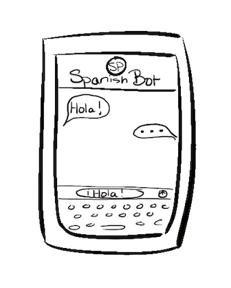

AI-Powered Language Learning
Potential Customers/Users: Language learners, students, professionals, and travelers looking for a personalized and efficient language learning experience.
Description: The AI-Powered Language Learning App is a cutting-edge solution that offers personalized lessons, real-time feedback, and immersive practice opportunities. The app adapts its content and pacing to the user's proficiency level and learning preferences, providing an engaging and effective language learning experience.
Visual Depiction:
Prior Works Collection
Needs (or drivers)
The need for effective and engaging language learning tools has prompted the development of this AI-Powered Language Learning innovation. With increasing globalization and remote work opportunities, the demand for multilingual individuals has grown. This innovation aims to make language learning more accessible, efficient, and enjoyable for users while providing personalized learning experiences to improve retention and fluency.
Resources (or ingredients)
To develop this soft innovation, we would require:
- AI and machine learning expertise to create personalized learning algorithms
- Linguists and language educators to develop the curriculum and learning materials
- Voice recognition technology for speech exercises
- App developers for creating user-friendly mobile and web applications
- Marketing and sales strategies to reach potential customers
Precedents (or points of departure)
Existing products or services similar to this innovation include language learning platforms like Duolingo, Rosetta Stone, and Babbel, which offer a mix of gamified and traditional learning techniques. These platforms often leverage AI technologies to offer personalized learning experiences, adaptive content, and speech recognition features. Additionally, AI chatbots like Mondly and Replika are available to help users practice conversation skills.
link text